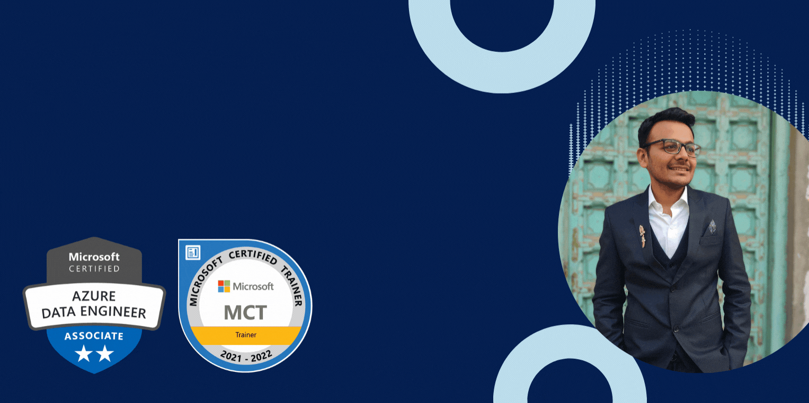

Intro

Who is Jayesh
I am currently a Senior Data Engineer at LTIMindtree . Skilled in Cloud Computing-Azure and AWS, Big data Analytics, Python and R. I have a BE - Bachelor of Engineering degree focused in Information Technology from Xavier Institute Of Engineering.
: jayeshjain1529@gmail.com
Interests
Programming
Programming is my professional passion something i wish to grow and groom myself everyday. I enjoy working on problems. Big data Analytics and cloud computing are two of my most favorite technologies to work.I am 5X Microsoft Azure Certified and Microsoft PowerPlatforms Fundamentals Certified. I have done over 5 projects and published 2 resreach papers in international journels.
Ranked 5th among 200 at a district level coding marathon
Teaching
Well I can now say teaching is my passion after 3 years of teaching programming to kids and adults from taking seminars to webinars it has been a great experience and it is one of thhe best things i look forward to doing.
Awarded Most valuable IT trainer
Digital Content Creation
From making videos, blog posts and different type digital content related to technology, lifestyle or travelling this is something which keep my creative juices flowing
Check out my youtube videos
Check out my blogs
Writing
Emotions can be written and those make good poetry. I have written over 40 pieces of short poetry,stories and random pieces of thoughts on varous platforms and writing is something which makes me "happier"
Check out some of my published poetry
Work Experience
Current
I am currently working as
Senior Data Engineer at LTIMindtree
Technologies: Azure, Databricks, Power BI , SQL and Jekins
Work Involved
- Designed and implemented Azure infrastructure for various applications
- Developed and optimized data pipelines using ADF, PySpark and Scala to ensure faster and efficient data migration, and performed end-to-end data quality checks.
- Conducted detailed analysis on potential third-party data handling solutions to ensure compliance with internal needs and stakeholder requirements.
- Analyzed complex data and identified anomalies, trends, and risks to provide valuable insights for improving internal controls.
- Achieved a 40% cost reduction and 30% performance boost by implementing performance and cost optimization techniques on Databricks.
- Implemented CI/CD using Jenkins and Terraform integration.
- Developed and implemented data archiving and compression solutions resulting in a 40% reduction in data size, leading to faster data retrievals.
Internships
Research And Teaching Assistant
@ TalentHome Solutions LLP
Working as a Research and Training Assistant in different IT technologies.Took IT training for more than 100 students over the years and workshops in different engineering colleges in Mumbai. Developed interactive courses for both Online and Offline Training programs. Also handled a team of interns for live projects and provided digital marketing solutions to different brands.
Android Developer
@ Laqshya Infosoft Solutions
Intensive Training on Android Application Development with an internship.
Developed an Application- MAKE MY PC.
The application helps to design a virtual PC with an extensive range of products and specifications while generating a rank and also an overall prize.
Projects
Real Time Twitter Sentiment Analysis
Use the twitter API to create endpoints and fetch real time tweets of any user. Tweepy python library was used to authentication and extraction. The tweets are then cleaned using regular expressions ( removing hashtags, @mentions , RTs, emojis and URLs). Used pandas to converts the raw data into data frame and used NLP and sklearn libraries to generate the subjectivity and polarity from the data strings. Made a scoring system to generate a new column ( sentiment ) which holds positive , negative and neutral and values based on the polarity score , generated graphs and word cloud for better data visualization.
Covid-19 Analysis using Big Data Tools
Novel Coronavirus or Covid-19 has created a pandemic leading to a worldwide
shutdown subsequently affecting all sectors. This has raised alarms over one of the most overlooked areas to focus: Healthcare Management.With the increase in the number of cases, this tremendously increased the demand
for beds and medical officials to handle the situation but predicting the demand for the next few months was very tough without the usage of data handling tools. This problem can be resolved by selecting precise big data tools to handle the data and data visualization so that the trend can be analyzed precisely and accordingly the demand would be satisfied.
Customer analysis on factors leading to purchase of vehicles using R programming
For different cars and motorbike companies, it is difficult to apply marketing strategies on a variety of customers because customers buy things based on certain attributes like annual income, children, and marital status. To predict the group of customers, customer segmentation uses clustering algorithms to differentiate customers based on their data and thus making it easier for cars and motorbike companies to address the customers and increase the sales and revenue.
Deep learning to get data enteries from paperback forms
To support digitization which is being impeded because of lack of basic knowledge of operating computers and being well versed with the internet especially in rural areas this is still prevalent. Minimizing the time and resources wasted due to long queues my project helps to automate redundant data-entry tasks which can be easily automated with the help of deep learning.
IOT based SMART HOME
Home Automation refers to the control of home appliances/ home devices through programming them as per our needs. This leads to an easy lifestyle for people living in that home as controlling devices/appliances over voice/gestures can lower the difficulty of performing tasks and thus saving time and energy. Home automation can be achieved using various degrees of intelligence and automation through a network. In this process, we make use of micro-controller to connect it with the network thus enabling us to program all the home appliances/devices as per our need. Home automation provides security, energy efficiency, and ease of use hence, it is adopted more. It also provides a remote interface to home appliances to provide control and monitoring on a web browser.
Social networking website for college
An online social networking service by which the user can establish a network among the people associated with the college. The students can post queries and doubts related to their studies on the website and teachers can respond accordingly. Students can view their time-table, syllabus, and workshops being organized in the college on the website.
Research

Using CRNN to Perform OCR over Forms
International Journal of Engineering Research & Technology
Description:
This paper presents the CRNN model used to perform OCR. The input image is a gray-scale image of size 128x32. After performing convolution via 5 CNN layers, the images are transformed into size of 32x256. The RNN part consists of 2 LSTM layers containing 256 nodes each to propagate information through the sequence and map the sequence to a matrix of size 32x80. Each element in the matrix is a score for the corresponding character(80 characters) at that particular timestep(32 time-steps). The CTC layer then uses this matrix to train along with the ground truth text. While inferring, it uses the beam search decoding algorithm to predict the output. The current model gives an error rate of 10.625% on IAM word dataset. This can be reduced by using Best Path Decoding or Word Beam Search algorithm in CTC. Since typically the words encountered in railway forms are proper nouns, Vanilla Beam Search algorithm is the best choice. An evaluation was done on forms filled by people having various handwriting styles. It was observed that handwriting styles matching the style of the IAM dataset,i.e. having more inter-word spaces and less intra-word spaces were segmented and recognized correctly.
Publication URL: Read it here
Automatic data collection from Forms using OCR
International Research Journal of Engineering and Technology
Description:
Optical Character Recognition(OCR) seems a very viable option for this case. However, blindly carrying out OCR won't produce any good results as there are many other elements in the form apart from the user's written data. This paper presents a structured way of scanning the paper-back form, collecting only the necessary, i.e. the user input data and update it to the database accordingly. The process involves using the scale-space technique to segment out the words from the input field and feeds them an input image to a CRNN(Convolutional Recurrent Neural Network) model to perform OCR on those words provide us with output ready to be updated into the database. This automated system cuts down the waiting time and also increases the efficiency as compared to the current system being used.
Publication URL: Read it here
Certifications
Microsoft Certified
Amazon Web Services
Python
Stocks and Finance